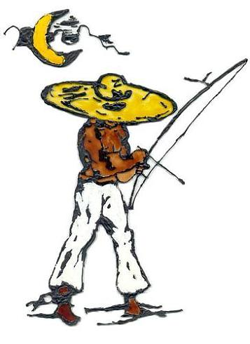
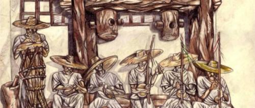

Песня понедельника — «Andanças» Mestre Pinóquio
Песня понедельника снова в строю.
C началом недели всех!
Так как никто не высказывает никаких пожеланий, не просит найти слов к какой-нибудь песне и тому подобное, то, по-прежнему каждый понедельник я выбираю песню непредсказуемым образом по собственному усмотрению.
Сегодня в нашем эфире песня, которая символизирует лично для меня путь капоэйриста. Песня, открывающая для слушателя один из 3х дисков с музыкой капоэйры, которые я могу признать музыкой для моих ушей. Первый трек с диска группы Mestre Pinóquio из группы “Quilombola”. Давно пора бы сделать о нём пост в блоге “Capoeiras”, но всё как-то руки не доходят. Да и понедельник у нас не день личностей и биографий, а день песен.
«Andanças» — первая песня диска, с первой строчки этой песни становится понятно, что вот она капоэйра, вот она музыка, вот он путь капоэйриста.
Лично мне всегда как-то капоэйра представлялась средством познания себя, познания мира и окружающих, помимо всех остальных аспектов музыки и физической подготовки. Часто именно капоэйра зовёт нас в поездки и дальние страны, капоэйра дарит нам новые знакомства, новых друзей. Иногда капоэйра приносит нам проблемы. Но всё это олицетворяет дорогу. Путь. Путь, которого не нужно бояться. Это дорога, которая только и ждет твоих ступней на себе.
Чтобы переводить песни и стихи вообще нужны особые умения, которыми я не обладаю. Поэтому не хочу вводить вас в заблуждение – перевод очень вольный, и не всей песни, а лишь части – чтобы можно было уловить настрой. Остальное – сами.
«Andanças» — Странствия
Peguei um gunga, um chapéu, uma navalha
E saí por essa estrada, para ver mundo rodar
Sou capoeira nascido de madrugada
Sob uma lua rasa, Deus há de me acompanhar
Eu fui pro norte, fui pro sul, pro centro-oeste
Cruzei cabra-da-peste que tentou me arrastar
Moro no mundo, discípulo da liberdade
Respeito e humildade, foi o que eu trouxe de lá
Mas sou guerreiro, não aceito cativeiro
Rasteira e cabeçada em quem tentar subestimar
Sou Quilombola
Tenho aluno, tenho escola
Eu saí foi sem demora, para um dia retornar
Sou Quilombola
Tenho aluno, tenho escola
Por favor moça não chora, qualquer dia volto cá
Sou Quilombola
Tenho aluno, tenho escola
Ensinei foi no sereno, os meninos do lugar
Sou Quilombola
Tenho aluno, tenho escola
Ensinei tocar pandeiro, atabaque e berimbau
Sou Quilombola
Tenho aluno, tenho escola
Fui barrado na Rússia, não me deixaram entrar
Sou Quilombola
Tenho aluno, tenho escola
Ensinei foi em Floripa, hoje ensino em Portugal.
Sou Quilombola
Tenho aluno, tenho escola
Corridos:
“Era hora grande quando eu cheguei na Bahia…”
“Ô sabiá deixa a fruta amarelá…”
“Pé dentro, pé fora…”
“Andaruê chega pra matá, Andaruêêê…”

Взял беримбау, шляпу, нож складной
И вышел на дорогу
Крутить ногами Шар Земной
Я капоэйра, родился на рассвете
Под полною луной и Бог всегда со мной
Ходил на север, юг, запад, восток
Бывало дрался
С тем, кто нарывался
Я житель мира, ученик свободы
Уважение и скромность
Несу с собой в мир
Но, воин я и плена не признАю
Раштейра с кабесадой тому,
Кто меня недооценит
Я Киломбола
У меня есть ученики и школа
Я Киломбола
Вышел на дорогу
Чтобы однажды вернуться
Я Киломбола
Милая, не плачь
Ведь я вернусь
…
Пара комментариев к песне:
Да, там есть строчка о России. Местре должен был приехать в Петербург в далеком 2004 году, но из-за проблем с визой тогда так и не смог доехать. Думаю, если бы на первом семинаре Петербурга он бы присутствовал, многое в капоэйре Санкт-Петербурга сложилось совсем по-другому.
В строчке про Португалию нам сообщается о том, что группа изначально появилась во Флорианополисе, а со временем появился и филиал в Португалии. Местре начинал преподавать уличным детям, в своё время сам начал заниматься капоэйрой на улице.

Огромное спасибо местре Пинокио за то, что он откликнулся на просьбу выложить его песню в открытый доступ. Когда я ему написал, что вот тут сайтик у нас есть, где мы трем о капоэйре – он сказал, что это круто и большая честь для него знать, что кто-то интересуется его песнями и мыслями. Так и запишите в протокол, он сам мне разрешил слить песню на тубик)))) Корридосы после вступления обрезал, потому как пришлось бы полдиска заливать. Хотя, конечно же, в диске Пинокио самый смак именно в том, как он исполняет корридосы.
Вот как то сегодня так.
Путешествуйте, ищите, влюбляйтесь и пойте песни.
Хороших дорог и дальних странствий!